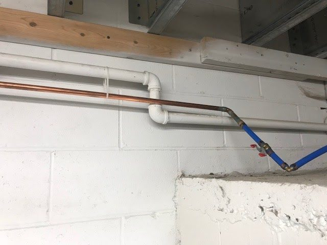
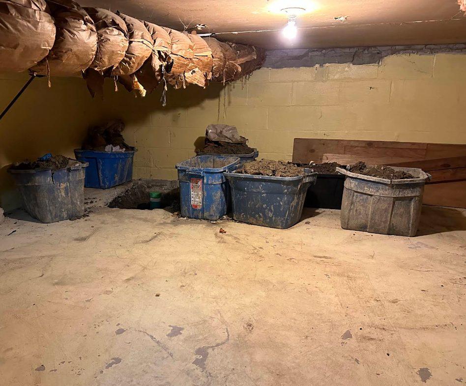

“Tony arrived at our place within 4 hours of our having called Brothers Plumbing for help. He explained really clearly what gave rise to the issue and gave us some good advice.”
Emilie K. · Google★★★★★
The Junction · west Toronto · plumbing & drains
Your plumber since 1969.
- ★ 4.4 from 299 Google reviews
- Price in writing before we start
- Same-day on most calls
- Open 7 days · 24/7 line

- 4.4 ★299 Google reviews
- 50+ yrsSame family, same street
- LicensedInsured · WSIB · background-checked techs
- 7 days7 am – 7 pm · emergency line 24/7
- $50 offAny service, one per visit
What we fix
Plumbing, drains and the pipes under old Toronto houses.
Fifty years in the Junction means we have seen every clay lateral, lead service and cast-iron stack in the west end. Pick the problem; every page tells you how it gets fixed and what is included.
Plumbing Repair & install
All plumbing services
Repair
Plumbing repair
Leaks, drips, low pressure, noisy pipes. Diagnosed and fixed in one visit.
DetailsRepair
Faucet repair & replacement
Dripping, stiff or leaking taps repaired, or a new faucet installed the same visit.
DetailsRepair & install
Toilet repair & installation
Running, rocking, clogged or cracked. Repaired or replaced, often within hours.
Details
Emergency
Frozen & burst pipes
No water in January, or water where it should not be. Thawed, repaired and insulated.
Details
Install
Sump pump installation & repair
Pumps, pits, check valves and battery backups for basements that take on water.
DetailsRepair & install
Water heaters
No hot water, not enough, or a tank that is leaking. Tank and tankless, repaired or replaced.
DetailsDrains & sewer Clogs, backups, repairs
All drain servicesDrains
Drain cleaning
Kitchen, bathroom, laundry and floor drains cleared and flowing, same day.
DetailsDrains
Drain snaking
Machine augering for stubborn clogs in sinks, tubs, toilets and main lines.
DetailsDrains
Hydro-jetting & power flushing
High-pressure water scours grease, scale and roots off the inside of the pipe.
DetailsAlso Heating & commercial
Boilers & radiators
Heating repair
Cold rads, leaking valves, pressure and noise on hot-water systems.
DetailsBusinesses
Commercial plumbing
Restaurants, clinics, offices and shops. Service accounts with priority response.
DetailsEmergency
Emergency plumbing
Burst pipes, backups, no water, flooding. What counts and what to do first.
Details
Emergency plumbing
Burst pipe at 3 a.m.?
Burst pipe at 3 a.m.?
Someone picks up.
The line is answered around the clock, 7 days a week. Shut off the main, call, and a technician phones you back with what to do while the truck is on its way.
We prioritize
- Burst or frozen pipes, no water
- Sewage backing up a floor drain
- Water heater leaking
- Sump pump failed in a storm
- Main water supply problems
Why Brothers
What fifty years on Osler Street taught us.
Pricing
You get the number first.
Written price before any work starts, per job, not per hour. I was given an estimate before the visit and had no surprises after.
— Elle L.
One visit
The truck carries the part.
Valves, supply lines, fill valves, cartridges, pumps. Most repairs are finished on the first visit. Complete the work the same day as the consultation.
— V. DS
People
Techs you'll ask for by name.
Tony, Jimmy, Aman, Jacob. Background-checked and drug-tested before they walk into your home, and reviewers keep naming them.
Roots
Same family since 1969.
Started by a Greek plumber in the west end, still run from 130 Osler Street. We have used Brothers Plumbing for 23 years.
— Erica H.
How a call goes
From your call to a dry floor.
You call or text
A real person answers. For emergencies we tell you what to shut off right away.
A technician phones you
Often within minutes, to ask the right questions so the truck arrives with the right parts.
Price before work
The technician diagnoses, explains the options, and writes the price down. You decide.
Fixed and walked through
Repair done, area cleaned, and a walkthrough of the work before we leave.
4.4299 Google reviews
Toronto · updated Oct 2026
Toronto · updated Oct 2026
Reviews
Kitchen sinks, toilets and leaks, in their words.
“Thanks to Brothers Plumbing, Jacob and Tony in particular, for their work replacing shut-off valves in the bathrooms and installing new toilets. Professional, informative, and helpful.”
Susan G. · Google★★★★★“I contacted Brothers on Saturday for an issue with my kitchen sink. A technician called me within a few minutes. I was given an estimate before the visit and had no surprises after.”
Elle L. · Google★★★★★“We have used Brothers Plumbing for 23 years and have always had beautiful work from them. Aman and Johnathan came to repair my sink and explained that my kitchen faucet was rusted.”
Erica H. · Google★★★★★“They were able to complete the work we needed on the same day as the consultation. They explained pricing, all the work they were going to do, then did a thorough walkthrough with us at the end.”
V. DS · Google★★★★★“They came quickly, on the same morning I called, and cleared a tough drain clog. Super friendly, fast, and professional.”
Mercy J. · Google★★★★★
Read all 299 on Google
Reviewers' first names and the technicians they mention, unedited beyond length.
Offers & plans
Two coupons and one plan worth knowing about.
Any service$50 off
Mention it when you book
Redeemable once per service visit. Cannot be combined with other offers.
No expiry listed · confirm with the officeBook with the couponSewer drain replacement$100 off
On a replaced sewage drain
For drain and sewer replacement jobs. One per service visit.
No expiry listed · confirm with the officeAbout drain repairCustomer Value Protection PlanCVPP
One fee, priority for life
A one-time enrolment, not a subscription: top of the list for scheduling, automatic inspections and routine maintenance, price protection on work during enrolment, and a full record of your plumbing history.
Ask the office for the current feeAsk about CVPP
Where we work
Based in the Junction. Across the city in the truck.
130 Osler Street, between Davenport and Dupont. West-end calls get the fastest response; the whole city and the near GTA are regular runs.
Don't see your neighbourhood? Call. If a truck is nearby we come.
West end (home turf)
- The Junction
- High Park
- Bloor West Village
- Roncesvalles
- Parkdale
- Liberty Village
- Mimico
- Etobicoke
Central
- The Annex
- Trinity Bellwoods
- Little Italy
- Kensington Market
- Chinatown
- CityPlace
- Harbourfront
- Yorkville
- Forest Hill
- Midtown
- Rosedale
- Cabbagetown
East
- Leaside
- Greektown
- Leslieville
- Distillery District
- Portlands
- The Beaches
- Scarborough
Beyond the city
- North York
- Mississauga
- Vaughan & Concord
- Richmond Hill
- Markham
- Toronto Islands
Questions
Before you call
How fast can you come?
Same day for most calls, often within hours. Emergencies (no water, active leak, sewage backup) go to the front of the line, 7 days a week.
What does it cost?
Every job is priced in writing before work starts, per job rather than by the hour. Ask about the trip fee when you book; it is credited toward the repair. The $50-off-any-service coupon applies once per visit.
Are you licensed and insured?
Yes. Licensed Ontario plumbers, fully insured and WSIB covered, and every technician is background-checked and drug-tested before entering a home.
Do you guarantee the work?
Yes. Repairs and installations are backed by our workmanship guarantee; the technician puts the terms on your invoice. CVPP members also get price protection.
Do you do commercial work?
Yes: restaurants, offices, dental and medical clinics, retail and light industrial, including grease traps and maintenance accounts.
What if I'm outside the west end?
We cover all of Toronto plus North York, Etobicoke, Scarborough, Mississauga, Vaughan, Richmond Hill and Markham. West-end calls are simply quickest.
Book a visit
Tell us what's going on.
Call or text for the fastest answer. Or leave the details here and a technician phones you back, usually the same day.
647-247-2230Call or text · 7 am – 7 pm, 7 days · emergency line 24/7
130 Osler StToronto, ON M6N 2Y8 · just south of Davenport
info@brothersplumbing.caEmail for quotes and commercial accounts